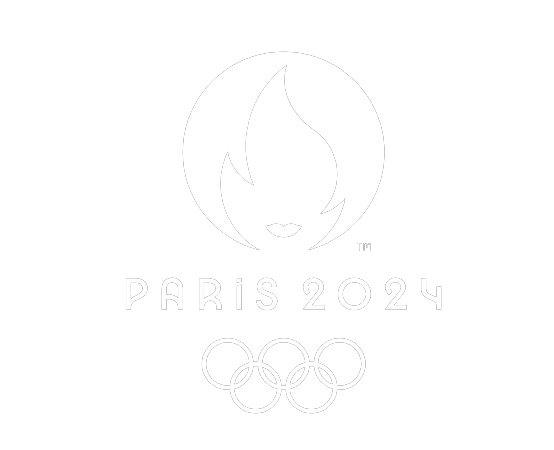
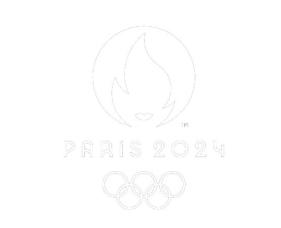
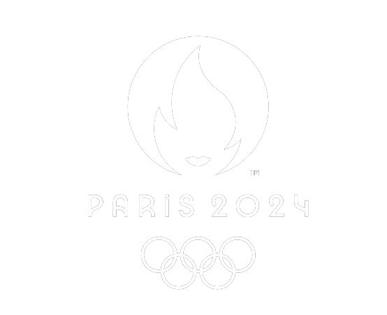

No Basquete Olímpico Masculino, os Estados Unidos surgem como uma força imponente, buscando sua quinta medalha de ouro consecutiva. Com um histórico de domínio na modalidade, são os maiores campeões olímpicos, seguidos de perto por União Soviética e Iugoslávia em suas épocas áureas.
Enquanto isso, o Brasil, apesar de sua tradição no basquete, conquistou apenas 3 medalhas de bronze ao longo dos anos e mantém viva a esperança de um dia alcançar o tão sonhado ouro olímpico.
Já no Basquete Olímpico Feminino, os Estados Unidos continuam a ser a equipe a ser batida. Atuais campeãs e gigantes no esporte, representam não só a excelência técnica, mas também o padrão de sucesso e consistência.
Com o maior número de títulos e medalhas, as norte-americanas entram mais uma vez como favoritas ao título. No entanto, desta vez o Brasil não estará presente para desafiar essa hegemonia, deixando uma lacuna na competição feminina.